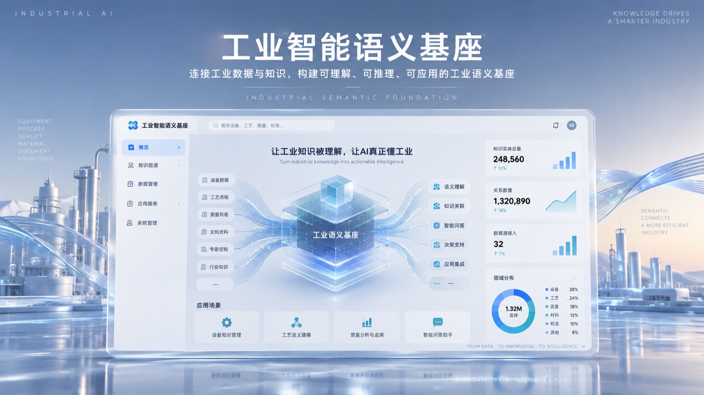
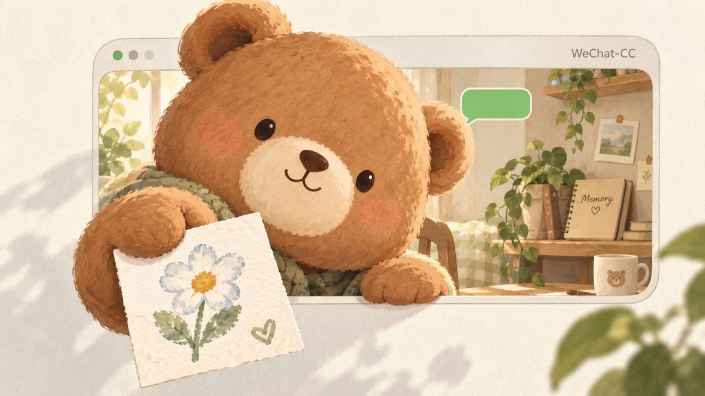
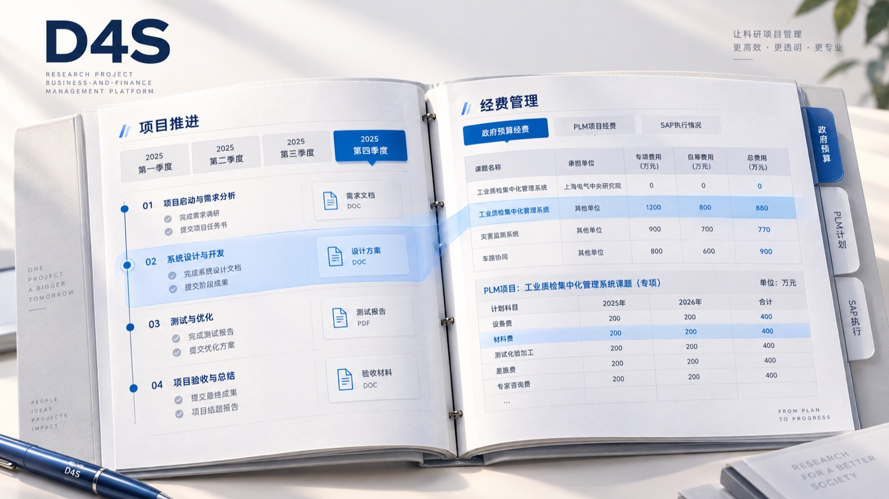
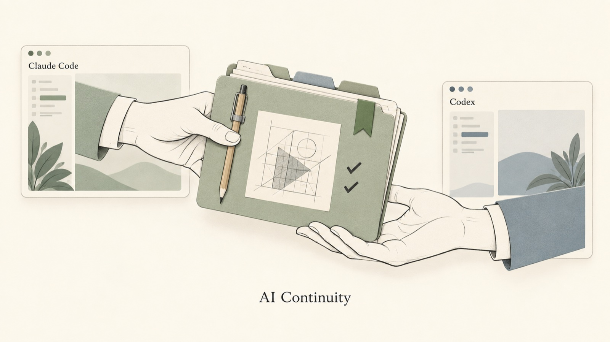
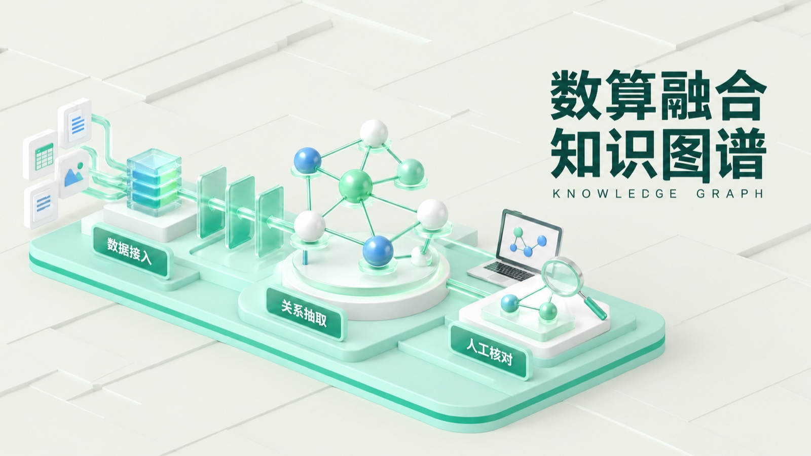

工业智能语义基座（新窗口）
让算法给出结论时，工程师仍看得见证据、留得住判断。
不同尺度，同样认真
企业中的复杂系统，
生活里的独立实验。
Selected Work / 04

让算法给出结论时，工程师仍看得见证据、留得住判断。

让 AI 主动联系有分寸：记得要跟进的事，也懂得在未获回应时停下。

连接科研项目的目标、经费与交付。

在 Claude Code 和 Codex 之间切换，也能接着上次的决定继续做。
More Work / 04

把长会议整理成可回查的纪要。让会议里的重要信息，留下来，也找得到。

从想法到可交互实物，把养成体验做进掌心。
把分散的能力，组织成一条可构建的 Agent 路径。

从散落的数据，走到可以理解的业务关系。
A Little About Me
从政企系统到工业 AI，我把复杂业务做成能用的产品——定义问题、做取舍、推动跨职能落地。设计是底子，能用 AI 端到端把想法做出来，是我今天的优势。
更多关于我Let's Make Something Real
关于 AI 产品、复杂系统，或一次有意思的合作，都欢迎聊聊。